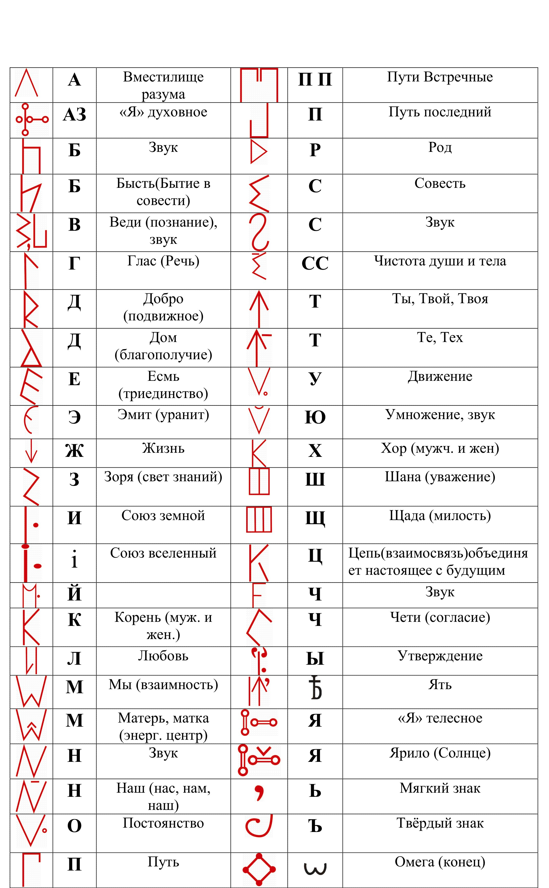
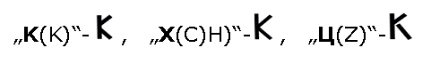
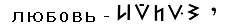
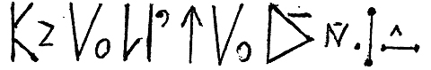
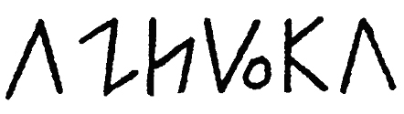

Ведическая Русо-арийская Руника - Азбука Русов.
Посвящается Иванченко Александру Семёновичу (13 мая 1936 - 25 мая 2003 гг.) – писателю, журналисту, моряку, исследователю письменности в летописи древней Руси.
Иванченко А.С. – большой мастер слова, он смог раскрыть очень интересные авторские включения историко-публицистического характера в книге «Путями Великого Россиянина» (в статье использованы материалы этой книги), которые сделали её информационно необычайно насыщенной. Он действительно был знатоком Ведических знаний и Древней Русской Летописи.
Многие слышали, что в среде современных брахманов Индии и буддистов Тибета сохранена традиция передачи Ведических знаний путём устного запоминания большого объёма информации. Однако не все знают об одной особенности подобной «технологии». Не каждый ребёнок для этой цели подходит, даже если он из семьи потомственных брахманов, а только тот, который: во-первых, на уровне генной памяти от рождения уже владеет некоторой частью информации (например, помнит «свою» прошлою жизнь или вдруг начинают говорить на ныне полузабытых или совсем забытых «мёртвых» языках); во-вторых, обладает качеством объёмного видения, описываемого на страницах дохристианских книг события (строки книги видятся этим детям, как наложенные на движущиеся изображения титры в кино). Таких детей по особым признакам умели отличать в древности бабки-повитухи (акушерки) уже в момент появления на свет; они сразу же сообщали о них старцам-волхвам, что становилось для них праздником.
Именно таким уникальным ребёнком и был Александр Иванченко, родившийся в малороссийском Ведическом селе Мисайловке, Киевской области с помощью мудрейшей повитухи-ведуньи, которая не замедлила послать весть об уникальном ребёнке в один из сохранившихся Русских Ведических центров в горах Памира. Вскоре для обучения мальчика и раскрытия в нём врождённого ведического знания прибыл учитель-старец Зоран. Этот седобородый с лучистыми голубыми глазами старец, носивший подпоясанную плетеным ремешком длинную белую рубаху, расшитую на груди и по ободкам рукавов рядочкам восьмиконечных васильковых звёздочек раскрыл тайны Малого Сварожья (Мира и Антимира) и Азбуки Россичей, созданные нашими Пращурами во втором тысячелетии до н.э.
Если положить рядом азбуку россичей XVI века до н. э. и минимум на 7-8 веков более поздний алфавит греков, то сразу поймём, на основе чего, как и с какой изначальной философией была создана кириллица, объясняет Иванченко А.С.
Старец Зоран объяснил Александру, что в древнерусской азбуке было 44 буквы, в том числе «А» как вместилище разума (верхний луч пятиконечной звезды - знака человека), имевшее значение звука, и «Аз» как духовное «Я»: пять точек, две из которых соединены вертикальной линией (человек прямостоящий и передвигающийся с помощью двух ног) и две - горизонтальной (две работающие руки); пятая точка слева вертикальной линии символизирует разум, управляющий всеми действиями человека и в то же время существующий сам по себе (всякая человеческая мысль является не вторичным продуктом биоэнергии мозга, а нераздельной её частью, мы же знаем закон сохранения энергии), потому эта пятая точка и поставлена как бы отдельно. (Рис.1)
Кирилл объединил первые две буквы в одно «Аз», но лишённые духовности и многозначности. По смыслу его «Аз» - человек, повёрнутый спиной вперёд: он не видит своего пути.
Таким образом, букв осталось 43, но только у трёх из них Кирилл оставил их прежнее смысловое значение, да и то неполное: «Веди» - без уточняющего «познания», «Добро» –
без указания на его подвижность, то есть что оно должно быть повсюду, и однозначное «Наш» –

в звуковом начертании - единственная буква, графику которой Кирилл не изменил.
«Бысть» -
– «бытие в совести» превратилось в бессмысленное «Буки», «Глас» - «речь» - в приказное «Глаголь», «Есмь» –
- «триединство»: муж, жена, дитя - в «Есть» и т.д.
Чтобы подробно проанализировать кириллицу, сопоставляя её с древнерусской азбукой, которую Кирилл, хотя и ориентировался на греческий алфавит, всё же больше взял за основу, но изменил её графику в соответствии с христианской философией и по примеру иудеев вместо «языческой» смысловой символики ввёл цифровое значение для 27 букв, нужно было бы написать отдельную и весьма обширную по своему объёму работу. Поэтому вкратце остановимся только на пяти буквах: Ж. Т. К. X. Ц.
РУСО-АРИЙСКАЯ ВЕДИЧЕСКАЯ РУНИКА - АЗБУКА РУСОВ

Рис. 1
Древнерусская буква «Ж» напоминает острие обращенной вниз стрелы:
и символизирует жизнь в ее триединстве. Начертание буквы «Т» точно такое же, но острие стрелы обращено вверх:
что тоже символизирует жизнь, но ту, другую, которую нужно уважать больше, чем свою, ибо только тогда тебя не растлит себялюбие и в Общей Жизни сохранится Согласие. (Рис. 2)
Рис. 2
«Ведический» символ жизни:
Кирилл заменил шестилучевиком «Моген Довид» - «Звездой Давида» - и придал ему значение «живете», то есть просто существования - жизни, не озарённой светом разума, поскольку, согласно христианству, Свет Разума может исходить только от Бога.
А вместо символа той, другой жизни:
ввёл иудейский знак обречённости «Т» - «Тау», но назвал его «Твердо», что должно означать твёрдую веру в обречённость всех нехристиан.
Могут возразить, что «Тау» имеет и другое значение - знак господства материального над духовным, на что Александр Семёнович Иванченко поясняет, что, у масонов – это так. Но так же, как исконно арийский прадавний знак человека - пятиконечная звезда - иудейский царь Соломон сделал своей «печатью», которая тоже используется в атрибутике масонства. Или браминский солнцеворот - свастику - фашисты, перевернув в обратную сторону, как письмо справа налево, означающее не согласие с Природой, а её разрушение, взяли себе эмблемой.
Кирилл, несомненно; из тех же теологических соображений изменил также начертание трех букв, писавшихся у россичей почти одинаково:

мужское и женское начала - два равновеликих и равнозначных, но все же различных и потому несколько отдаленных друг от друга на единой вертикали зримого Бытия духа, составляют:
орень“, от которого произрастает в настоящем:
ор“ духов для своего и его, духов, продолжения в единой жe:
епи“, соединяющей настоящее с будущим, из-за чего, нижняя правая черточка у буквы:
„Ц (Z)“ не примыкает вплотную к вертикали зримого настоящего, как у "К" и "X",
а немножко отдалена, она шагает в будущее.
А так Александр Семёнович предлагает разобрать слова и смысл по Ведической Азбуке Россичей, казалось бы, ясных для нас таких понятий, как «Любовь». Слова эти в русском языке очень древние, и раскрыть егo подлинный смысл можно, лишь увидев егo первоначальное начертание, ибо до-кирилловская русская азбука представляла собой не просто буквенное обозначение звуков, определённую систему символов, каждый из которых имел не только звуковое, но и своё самостоятельное смысловое значение, кроме таких служебных грамматических знаков, как апостроф, мягкий и твёрдый знаки и т.д., букв-флексий, союзов и тех случаев, когда гласная буква употреблялась в одном своём значении - звуковом.
Например, в общем контексте слово «Любовь» по древне - русской азбуке получается:

– „Л“ - две вертикали зримого бытия, у первой из которых лишь одно начало, мужское
или женское - пока неизвестно, инициатива в любви одинаково может принадлежать и мужчине, и женщине, поэтому на второй вертикали начало вообще не обозначено, оно появится после тогo, как две эти вертикали сольются в одну и вместе дадут:
– „ЖИЗНЬ“;
- „Ю“ – „ВЛЕЧЕНИЕ“ - Движение /так и писалось, одной буквой;
– „B“ /бытие в совести;
– „O“ / постоянно и
– „ВEДИ“ /изведать, познать. Контекст; „влечение друг к другу для постоянного бытия в совести к познания.“
Как символ полная буква:
-- тоже обозначала „ЛЮБ0ВЬ“ а только первая ее часть - "ЛОЖНУЮ ЛЮБОВЬ", обратите на
это внимание.
Так по древнерусской дохристианской азбуке выглядит слово «Культура»: (Рис. 3)

Рис. 3
А древнее начертание аббревиатуры «Азбука» такое: (Рис. 4)

Рис. 4
До начала 19 столетия наши предки говорили на образном языке, в котором каждая буква имела своё образное значение. Впоследствии, Ведическую Азбуку заменили на простой фонетический алфавит, что привело к потере образного мышления у человека.
Древнюю Ведическую Мудрость необходимо познавать не только умом, её нужно принять в своё сердце и вникнуть в каждый Образ. Но только тогда, когда информация (набор характеристик, который не даёт полного знания) проходит через Сердце, Душу, Разум, Ум, Дух в жизненном опыте, и это становится Образом Жизни, тогда информация становится Ведическим Знанием.
Литература:
- Иванченко Александр Семёнович. - Гусев О.М. Роман-исследование «Путями Великого Россиянина», Санкт-Петербург. ООО «АНТТ-Принт», 2006г.- 334 стр.